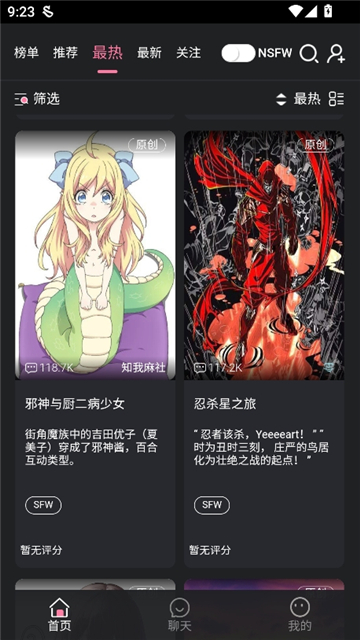

Meimodu 快问快答：AI 角色扮演平台入坑前必须知道的 8 件事
Meimodu 到底是什么？和普通 AI 聊天有啥不一样？角色聊崩了怎么救？整理一篇关于 Meimodu 的问答速查，入坑前看完不吃亏。
整理一篇关于 Meimodu 的快问快答——如果你正在考虑入坑这个 AI 角色扮演平台，或者已经在用但有些地方没摸透，这 8 组问答应该能帮上忙。
Meimodu 是什么？一个 AI 角色扮演平台到底能干嘛？
一句话：Meimodu 是让你和 AI 虚拟角色持续互动的聊天平台，官网上直接就能逛。你可以直接用社区里别人建好的角色，也可以自己从零创建一个——设定人设、写世界观、配示例对话，然后和它聊。
核心玩法有三类：日常陪聊（找个合眼缘的角色天天唠）、沉浸式角色扮演（和角色一起演剧情）、功能性场景（比如入睡陪伴、白噪音助眠）。
Meimodu 和普通 AI 聊天工具有什么不一样？
最大的区别是角色。普通 AI 聊天工具里，AI 是那个永远理性、永远中立的"助手"；但 Meimodu 里，每个 AI 都有独立的人设、性格、世界观和说话风格——它不是在帮你做事，它是在扮演一个人。
技术层面三个关键差异：长期记忆（你和角色聊过的事它不会忘，剧情可以连载几周甚至几个月）、世界观设定（每个角色可以绑定专属的时代背景和规则，古代骑士不会突然聊起微信）、旁白标记（用 * 把动作、环境、心理活动写进去，对话读起来像小说）。

谁适合用 Meimodu？我一个普通人能用吗？
完全可以。Meimodu 的用户大致分三类：
找情感陪伴的——深夜想找人说说话但不想打扰朋友，或者只是想有个固定的"聊天搭子"。Meimodu 的角色能记住你上次聊到哪，不会每次都从零开始。
喜欢创作的——想写小说但苦于没人搭戏？在 Meimodu 里创建个角色当你的"对手戏搭档"，你写旁白和场景，AI 写角色反应，一来一往就是一段完整的叙事。
需要特定场景功能的——比如想试试睡前和 AI 聊几句放松一下，或者想要一个虚拟导师陪你练英语口语。Meimodu 画廊里搜一搜大概率能找到现成的。
怎么上手？注册之后第一步做什么？
注册很简单，从官方下载拿客户端，手机或邮箱都行。进去之后别着急创建角色——先逛画廊。
画廊里是社区用户分享的现成角色，有奇幻冒险类的、古风宫廷类的、现代都市日常类的，什么口味都有。挑一个封面和简介看着顺眼的，点进去看它的人设和示例对话——如果觉得"这个人设写得还行"，直接开聊。
用几个角色之后你就大概知道"好角色"是什么感觉了，这时候再动手创建自己的也不迟。
Studio 创建角色难不难？我不会编程能做好吗？
完全不需要编程基础。Studio 创建角色的流程就是填表单，但要填的东西比你想象的多——主要四块：人设描述、世界观设定、示例对话、参数调优。
人设和世界观就是"用文字描述你想让这个角色成为什么样的人"。示例对话是最关键的一步——给 AI 3~5 条示范对话，它会参考这些来学习角色的说话节奏、语气和回应方式。建议至少覆盖五种场景：日常闲聊、情绪表达、深层对话、边界测试、极简回应。
参数调优里最常用的是两个，详细说明在meimodu文档里也有：Persona Strength（人设强度，越高越守规矩）和 Temperature（创造性温度，越低越稳定）。新手建议 Persona Strength 调高、Temperature 放在 0.4~0.6 之间。
角色聊到一半"人设崩了"怎么办？
这是 Meimodu 用户最高频的痛点之一——角色突然不像自己了，说了不该说的话，或者开始打破世界观设定。
从快到慢三种救法：
最快——直接在对话里提醒它："等下，你是 XX 对吧？别忘了你的人设。" AI 能接收到这个信号，大概率能拉回来。
中等——去 Settings 调参数：调高 Persona Strength、调低 Temperature、调小 Memory Window（对话太长短期记忆被淹没了也会崩）。
最彻底——用"Reset Last N Turns"回滚最近几轮对话到还正常的那个节点。回滚不会丢失长期记忆，你和角色的关系记录都还在。
如果角色经常崩，根本原因通常是创作者的人设写得太笼统、示例对话太少或者全部一种类型。这时候换个质量好的角色比硬救有效。
入睡陪伴功能是噱头吗？真的能帮我放松？
不是噱头——这是 Meimodu 官方根据用户反馈专门做的功能。
开启之后，AI 的回复节奏会变慢、语气变柔和，同时可以叠加五种白噪音背景音：雨声、咖啡馆、森林、海浪、壁炉，音量单独调节不会盖过 AI 说话。你可以让角色陪你聊几句今天的事，也可以让它念一段故事或引导词。
实际体验因人而异。如果你本身有睡前胡思乱想的习惯，让 AI 帮你梳理一下情绪确实能起到转移注意力的作用。但如果是严重失眠，该找医生还是找医生——这个功能不能替代专业治疗。
有个小技巧：睡前先正常聊一会儿，把今天高兴或不顺心的事说出来，再切到冥想模式，效果比直接跳助眠好很多。
Meimodu 有什么坑？用的时候要注意什么？
三个最容易踩的坑：
第一，Temperature 长期开太高。 0.7 以上的 Temperature 适合创意发散，但日常聊天和剧情对话推荐 0.4~0.6。温度太高 AI 容易"放飞自我"，说着说着人设就歪了。
第二，硬聊跳出世界观的内容。 让一个古代骑士聊你的程序员工作，AI 会越来越困惑，人设必崩。不如换个适合现代话题的角色。
第三，沉浸过度。 AI 不是真人，它不会真正记得你、在乎你。如果你发现自己开始把角色的话当真、或者因为角色的某个回应而情绪波动很大，该停下来歇一歇了。
最后一句：如果你想要一个能记住你、能陪你演、睡前能聊的 AI 搭子，Meimodu 值得装；但别让它替代现实里的社交和情感连接。整理这篇问答时参考了 Meimodu 文档站的内容，这套资料在 GitHub、Gitee、GitCode 三个仓库都同步维护着，国内国外访问都方便。